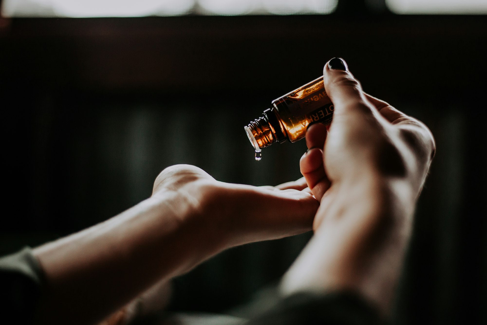
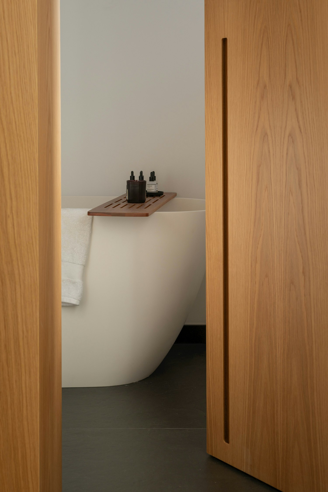
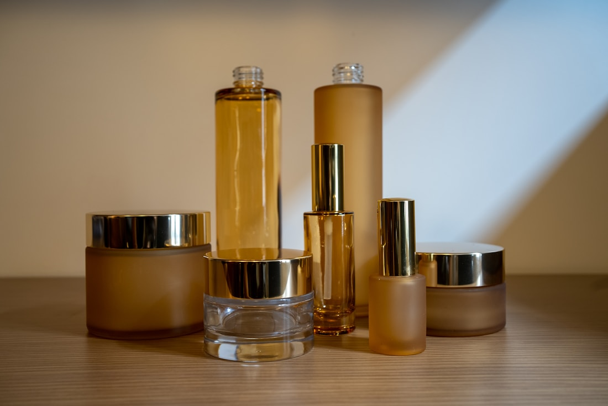

Citrus Glow Detox Scrub
CHF 38Dead Sea Salt · Coconut · Grapefruit
A brightening polish that wakes the skin. Mineral salt to refine, coconut to soften, grapefruit to lift the morning.

A small, warm room for considered bodywork. We work slowly, with our hands, and let the hour belong entirely to you.
We believe touch is a kind of attention. So we keep the room quiet, the light low, and the timing unhurried.
Franklin, founder
Franklin began as a single treatment room above a courtyard in Zürich, built around one idea: that good bodywork is unrushed and deeply personal. There is no conveyor belt here, no upsell, no clock you can feel ticking.
Each ritual is shaped to the body in front of us. We use warm oils, slow pressure, and products we make by hand in small batches. You arrive carrying the week. You leave a little lighter.
Explore the rituals
The studio was made to feel like a held breath. Clay walls, a brick reveal, dried olive branches, and just enough candlelight to soften the edges of the day.
Nothing here asks anything of you. Arrive a few minutes early, settle, and let us read the rest.
The same scrubs we use in the room, jarred to take home. Two rituals, two moods.
Dead Sea Salt · Coconut · Grapefruit
A brightening polish that wakes the skin. Mineral salt to refine, coconut to soften, grapefruit to lift the morning.

Brown Sugar · Jojoba · Lavender
A gentler, grounding blend for the evening. Fine sugar to smooth, jojoba to nourish, lavender to slow everything down.
An hour at Franklin is the closest thing Zürich has to stopping time. I leave feeling like the week has been unpicked.Marta L. · Returning guest
Booking is by appointment so the room stays calm and unshared. Tell us how you would like to feel afterward, and we will shape the rest.